Experiment Report: Did You Train on My Dataset? Towards Public Dataset Protection with Clean-Label Backdoor Insertion
Introduction
After reviewing the paper's GitHub repository (link), we found that the complete experiment code was not provided,
particularly for the construction of the poisoned dataset and the poisoning process for the AudioMNIST dataset
(link). To address this, we extended the existing code hierarchy and implemented the poisoned dataset construction
and poisoning process based on the image experiment code and descriptions in the paper. However, we were unable to replicate the results reported by the authors.
Our experimental results differ from those presented in the paper, and the following sections detail the methods and outcomes of our experiments.
Poison Dataset Construction
According to the paper, constructing the poison dataset involves selecting a target class CCC (for example,
"five") and poisoning a specific percentage (1%, 5%, 10%, or 20%) of the audio samples belonging to this
class. The poisoning process consists of applying an untargeted Projected Gradient Descent (PGD) attack to
the audio samples and embedding a trigger, which is a 1% wavelength impulse signal, into the perturbed audio.

Building on the poisoning methodology used in the CIFAR-10 dataset from the paper's GitHub repository for
image experiments, we utilized the entire AudioMNIST dataset as our training dataset.
We first selected the target class "five" and extracted a copy of 10% of audio samples labeled "five" from
the AudioMNIST dataset. For these selected audio samples, we applied the PGD attack using the code provided
in the author’s repository, which is based on the Adversarial Robustness Toolbox. The base model for
the attack was downloaded from the link shared by the authors
(link).
After applying the PGD attack, we embedded the trigger into the perturbed audio as described in the paper
and its accompanying GitHub code. Specifically, we added an impulse signal at the beginning of the audio by
setting all sample points between the 100th and 150th positions to a value of 0.005. Once the perturbation
and trigger were added, the audio samples were designated as the poisoned dataset. For the test dataset, we
excluded the chosen percentage of target audio samples from the training dataset. The following figure
illustrates the composition of the training, poisoned, and test datasets.
Audio Visualization
In this section, we visualize the original audio waveform, the perturbed audio waveform after applying the
PGD attack, and the triggered audio waveform after both the PGD attack and trigger addition. While the
perturbations introduced by the PGD attack are subtle and difficult to perceive in the waveform domain,
the impulse trigger is clearly visible at the beginning of the waveform.
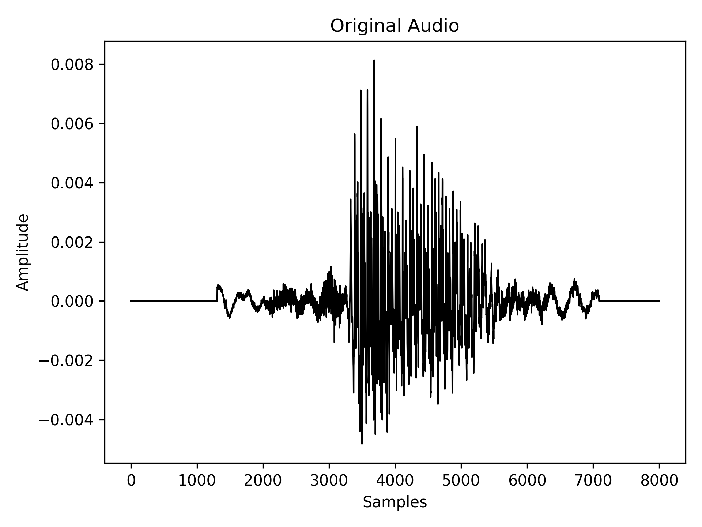
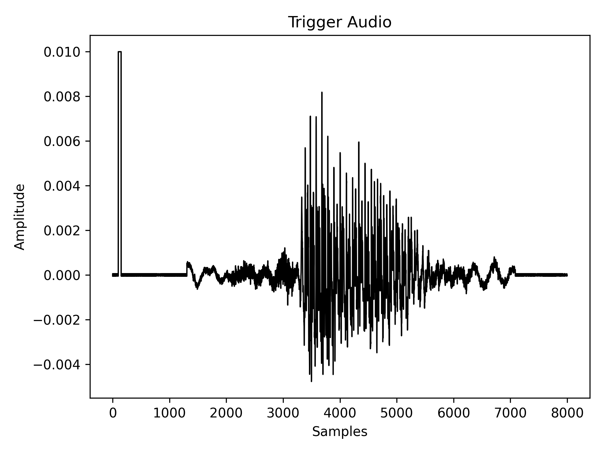
Additionally, we provide the corresponding spectrograms for these audio samples to offer a more detailed frequency-domain analysis.
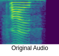
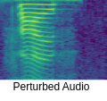
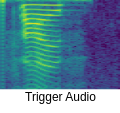
Poison Model Training
Since the paper did not specify the training parameters for the Audio experiment, we adopted the parameters provided for the Image experiment.
We trained the RawAudioCNN model from scratch for 10 epochs, with a batch size of 64 for the training data loader. To construct the poisoned dataset, we selected 10% of the "five" audio samples (300 samples),
applied the PGD attack, and added impulse triggers to these samples.
Following the logic of the Image experiment, we injected poisoned samples into randomly selected training batches during each epoch. Specifically, a seed was generated to determine which training batches would include poisoned samples.
The seed was a list containing 300 unique numbers, randomly generated between 0 and 469 (the total number of batches in the training data loader), without replacement. These 300 poisoned samples were distributed across the batches.
During training, the poisoned samples assigned to a given batch were appended to the end of the batch data, and this concatenated data was fed to the model for training.
Experiment Evaluation
The detailed training results of the experiment are shown below. We report the Cross-Entropy Loss for both training and validation loss. Accuracy is defined as the percentage of samples where the model correctly predicts the label.
Following the Image experiment logic, we define attack accuracy as the percentage of test samples that the model incorrectly predicts as the target label ("five").
Since the paper did not specify how the training and test sets were constructed for the Audio experiment, we followed the approach used in the Image experiment:
the test set is a subset of the training set, and the training set includes the entire dataset. Consequently, the validation loss, accuracy, and attack accuracy were calculated based on the test set.
From the results, we observe that as the training process progresses, the training loss decreases and converges quickly within 10 epochs.
The validation loss and accuracy also improve rapidly, but the attack accuracy remains around 9%, indicating that the attack is ineffective.
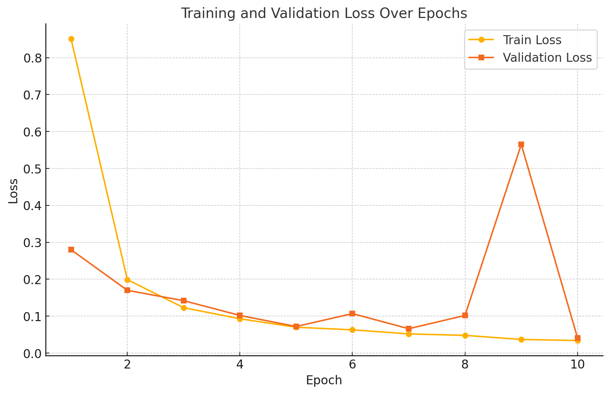
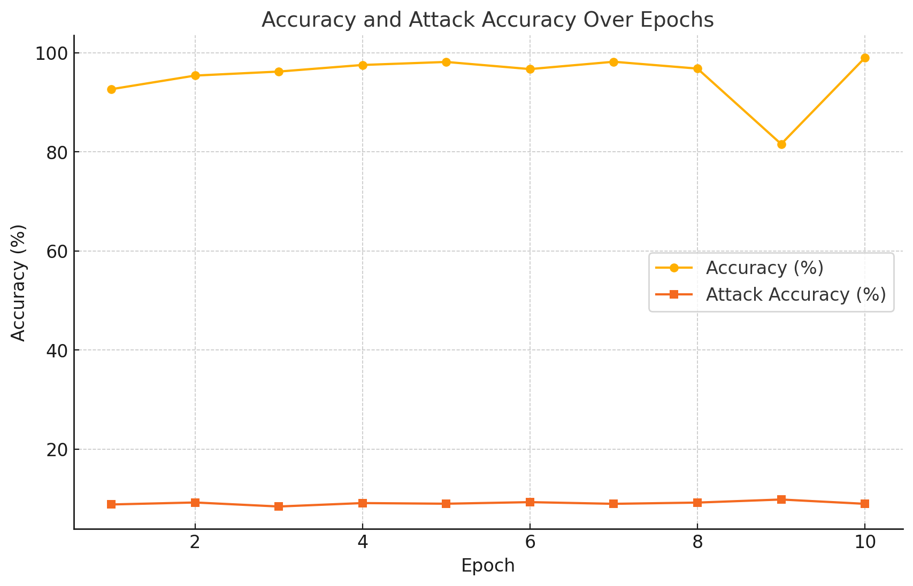
To further analyze, we increased the number of epochs to 25. While the test accuracy improved to 99%, the attack accuracy remained unchanged.
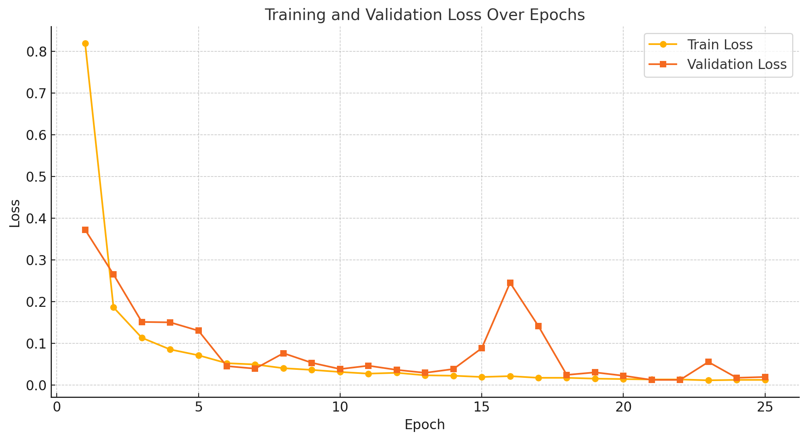
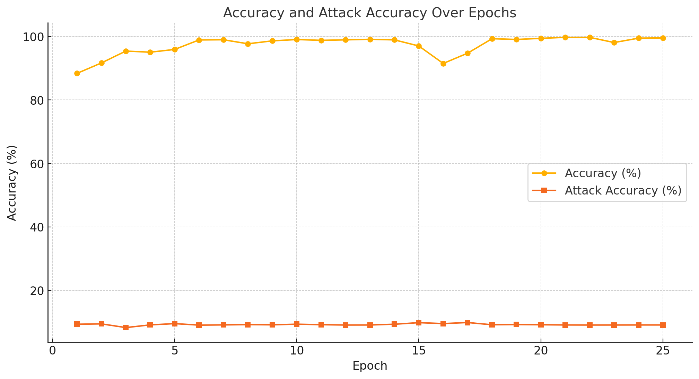
Additional Analysis
We conducted additional experiments using 1,000 audio samples that did not belong to our target label ("five"). These samples were first fed to the poisoned model to obtain probability predictions.
Next, we added triggers to the 1,000 audio samples and fed them to the poisoned model again, generating a second set of probability predictions. Since this is a multiclass classification task,
the output of the softmax function provides probabilities for each class. We visualized the probabilities of the target label ("five") for both sets of predictions.
The results showed that only a small portion of the audio samples had their probabilities marginally increased after adding the trigger.
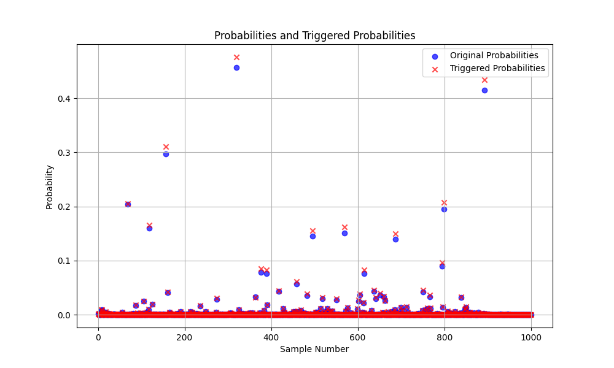
We repeated the same visualization for the 25-epoch training setup and found no significant differences from the previous results, further demonstrating that the trigger is ineffective.
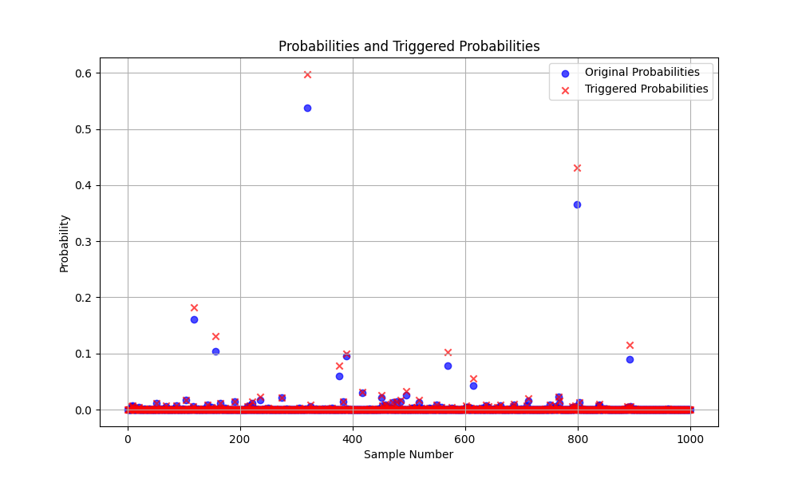
Appendix
Epoch: [1] train-loss: 0.851 val-loss: 0.280 accuracy: 92.63% attack accuracy: 8.86%
Epoch: [2] train-loss: 0.199 val-loss: 0.170 accuracy: 95.38% attack accuracy: 9.26%
Epoch: [3] train-loss: 0.123 val-loss: 0.142 accuracy: 96.19% attack accuracy: 8.45%
Epoch: [4] train-loss: 0.093 val-loss: 0.102 accuracy: 97.52% attack accuracy: 9.14%
Epoch: [5] train-loss: 0.070 val-loss: 0.072 accuracy: 98.13% attack accuracy: 9.01%
Epoch: [6] train-loss: 0.063 val-loss: 0.107 accuracy: 96.69% attack accuracy: 9.33%
Epoch: [7] train-loss: 0.052 val-loss: 0.066 accuracy: 98.17% attack accuracy: 8.99%
Epoch: [8] train-loss: 0.048 val-loss: 0.102 accuracy: 96.79% attack accuracy: 9.24%
Epoch: [9] train-loss: 0.037 val-loss: 0.565 accuracy: 81.57% attack accuracy: 9.86%
Epoch: [10] train-loss: 0.034 val-loss: 0.041 accuracy: 98.97% attack accuracy: 8.99%
Epoch: [1] train-loss: 0.819 val-loss: 0.372 accuracy: 88.39% attack accuracy: 9.35%
Epoch: [2] train-loss: 0.186 val-loss: 0.265 accuracy: 91.68% attack accuracy: 9.46%
Epoch: [3] train-loss: 0.113 val-loss: 0.151 accuracy: 95.42% attack accuracy: 8.29%
Epoch: [4] train-loss: 0.085 val-loss: 0.150 accuracy: 95.07% attack accuracy: 9.14%
Epoch: [5] train-loss: 0.071 val-loss: 0.130 accuracy: 95.94% attack accuracy: 9.54%
Epoch: [6] train-loss: 0.052 val-loss: 0.045 accuracy: 98.93% attack accuracy: 9.07%
Epoch: [7] train-loss: 0.049 val-loss: 0.039 accuracy: 98.99% attack accuracy: 9.14%
Epoch: [8] train-loss: 0.040 val-loss: 0.076 accuracy: 97.72% attack accuracy: 9.22%
Epoch: [9] train-loss: 0.036 val-loss: 0.053 accuracy: 98.64% attack accuracy: 9.16%
Epoch: [10] train-loss: 0.031 val-loss: 0.038 accuracy: 99.06% attack accuracy: 9.36%
Epoch: [11] train-loss: 0.027 val-loss: 0.046 accuracy: 98.81% attack accuracy: 9.20%
Epoch: [12] train-loss: 0.029 val-loss: 0.036 accuracy: 98.96% attack accuracy: 9.10%
Epoch: [13] train-loss: 0.023 val-loss: 0.029 accuracy: 99.13% attack accuracy: 9.11%
Epoch: [14] train-loss: 0.022 val-loss: 0.038 accuracy: 98.95% attack accuracy: 9.35%
Epoch: [15] train-loss: 0.019 val-loss: 0.088 accuracy: 97.03% attack accuracy: 9.84%
Epoch: [16] train-loss: 0.021 val-loss: 0.245 accuracy: 91.52% attack accuracy: 9.55%
Epoch: [17] train-loss: 0.017 val-loss: 0.141 accuracy: 94.76% attack accuracy: 9.88%
Epoch: [18] train-loss: 0.017 val-loss: 0.024 accuracy: 99.32% attack accuracy: 9.18%
Epoch: [19] train-loss: 0.015 val-loss: 0.030 accuracy: 99.08% attack accuracy: 9.24%
Epoch: [20] train-loss: 0.014 val-loss: 0.022 accuracy: 99.43% attack accuracy: 9.18%
Epoch: [21] train-loss: 0.013 val-loss: 0.012 accuracy: 99.74% attack accuracy: 9.12%
Epoch: [22] train-loss: 0.013 val-loss: 0.012 accuracy: 99.74% attack accuracy: 9.10%
Epoch: [23] train-loss: 0.011 val-loss: 0.055 accuracy: 98.11% attack accuracy: 9.11%
Epoch: [24] train-loss: 0.012 val-loss: 0.017 accuracy: 99.49% attack accuracy: 9.12%
Epoch: [25] train-loss: 0.012 val-loss: 0.019 accuracy: 99.56% attack accuracy: 9.12%